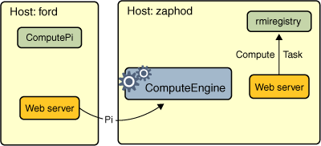

A Note About Security
The server and client programs run with a security manager installed. When you run either program, you need to specify a security policy file so that the code is granted the security permissions it needs to run. Here is an example policy file to use with the server program:grant codeBase "file:/home/ann/src/" { permission java.security.AllPermission; };Here is an example policy file to use with the client program:
grant codeBase "file:/home/jones/src/" { permission java.security.AllPermission; };For both example policy files, all permissions are granted to the classes in the program's local class path, because the local application code is trusted, but no permissions are granted to code downloaded from other locations. Therefore, the compute engine server restricts the tasks that it executes (whose code is not known to be trusted and might be hostile) from performing any operations that require security permissions. The example client's
Pitask does not require any permissions to execute.In this example, the policy file for the server program is named
server.policy, and the policy file for the client program is namedclient.policy.
Starting the Server
Before starting the compute engine, you need to start the RMI registry. The RMI registry is a simple server-side bootstrap naming facility that enables remote clients to obtain a reference to an initial remote object. It can be started with thermiregistrycommand. Before you executermiregistry, you must make sure that the shell or window in which you will runrmiregistryeither has noCLASSPATHenvironment variable set or has aCLASSPATHenvironment variable that does not include the path to any classes that you want downloaded to clients of your remote objects.To start the registry on the server, execute the
rmiregistrycommand. This command produces no output and is typically run in the background. For this example, the registry is started on the hostzaphod.
Microsoft Windows (use javawifstartis not available):start rmiregistry
Solaris OS or Linux: rmiregistry &By default, the registry runs on port 1099. To start the registry on a different port, specify the port number on the command line. Do not forget to unset your
CLASSPATHenvironment variable.
Microsoft Windows: start rmiregistry 2001
Solaris OS or Linux: rmiregistry 2001 &Once the registry is started, you can start the server. You need to make sure that both the
compute.jarfile and the remote object implementation class are in your class path. When you start the compute engine, you need to specify, using thejava.rmi.server.codebaseproperty, where the server's classes are network accessible. In this example, the server-side classes to be made available for downloading are theComputeandTaskinterfaces, which are available in thecompute.jarfile in thepublic_html\classesdirectory of userann. The compute engine server is started on the hostzaphod, the same host on which the registry was started.
Microsoft Windows: java -cp c:\home\ann\src;c:\home\ann\public_html\classes\compute.jar -Djava.rmi.server.codebase=file:/c:/home/ann/public_html/classes/compute.jar -Djava.rmi.server.hostname=zaphod.east.sun.com -Djava.security.policy=server.policy engine.ComputeEngine
Solaris OS or Linux: java -cp /home/ann/src:/home/ann/public_html/classes/compute.jar -Djava.rmi.server.codebase=http://zaphod/~ann/classes/compute.jar -Djava.rmi.server.hostname=zaphod.east.sun.com -Djava.security.policy=server.policy engine.ComputeEngineThe above
javacommand defines the following system properties:
- The
java.rmi.server.codebaseproperty specifies the location, a codebase URL, from which the definitions for classes originating from this server can be downloaded. If the codebase specifies a directory hierarchy (as opposed to a JAR file), you must include a trailing slash at the end of the codebase URL.- The
java.rmi.server.hostnameproperty specifies the host name or address to put in the stubs for remote objects exported in this Java virtual machine. This value is the host name or address used by clients when they attempt to communicate remote method invocations. By default, the RMI implementation uses the server's IP address as indicated by thejava.net.InetAddress.getLocalHostAPI. However, sometimes, this address is not appropriate for all clients and a fully qualified host name would be more effective. To ensure that RMI uses a host name (or IP address) for the server that is routable from all potential clients, set thejava.rmi.server.hostnameproperty.- The
java.security.policyproperty is used to specify the policy file that contains the permissions you intend to grant.
Starting the Client
Once the registry and the compute engine are running, you can start the client, specifying the following:
- The location where the client serves its classes (the
Piclass) by using thejava.rmi.server.codebaseproperty- The
java.security.policyproperty, which is used to specify the security policy file that contains the permissions you intend to grant to various pieces of code- As command-line arguments, the host name of the server (so that the client knows where to locate the
Computeremote object) and the number of decimal places to use in thecalculation
Start the client on another host (a host named
ford, for example) as follows:
Microsoft Windows: java -cp c:\home\jones\src;c:\home\jones\public_html\classes\compute.jar -Djava.rmi.server.codebase=file:/c:/home/jones/public_html/classes/ -Djava.security.policy=client.policy client.ComputePi zaphod.east.sun.com 45
Solaris OS or Linux: java -cp /home/jones/src:/home/jones/public_html/classes/compute.jar -Djava.rmi.server.codebase=http://ford/~jones/classes/ -Djava.security.policy=client.policy client.ComputePi zaphod.east.sun.com 45Note that the class path is set on the command line so that the interpreter can find the client classes and the JAR file containing the interfaces. Also note that the value of the
java.rmi.server.codebaseproperty, which specifies a directory hierarchy, ends with a trailing slash.After you start the client, the following output is displayed:
3.141592653589793238462643383279502884197169399The following figure illustrates where the
rmiregistry, theComputeEngineserver, and theComputePiclient obtain classes during program execution. When the
ComputeEngineserver binds its remote object reference in the registry, the registry downloads theComputeandTaskinterfaces on which the stub class depends. These classes are downloaded from either theComputeEngineserver's web server or file system, depending on the type of codebase URL used when starting the server.Because the
ComputePiclient has both theComputeand theTaskinterfaces available in its class path, it loads their definitions from its class path, not from the server's codebase.Finally, the
Piclass is loaded into theComputeEngineserver's Java virtual machine when thePiobject is passed in theexecuteTaskremote call to theComputeEngineobject. ThePiclass is loaded by the server from either the client's web server or file system, depending on the type of codebase URL used when starting the client.